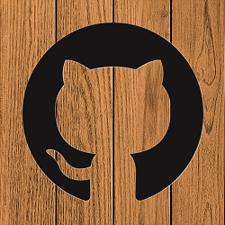

{% if user %}
Close Menu
Logged in as:
{{user.name}}
Home
Le Pardon
Contact
Hug Chat
Room ba
Promesse de Don
log out
{% else %}
Close Menu
You should log in
Home
Le Pardon
Contact
Hug Chat
Room ba
Promesse de Don
{% endif %}
☰
Hatchi-Kin
{% block content %} {% endblock %}
Hatchi-Kin... since the 80's:
